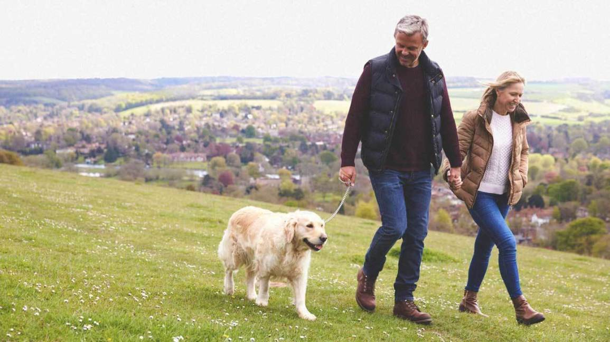

Mindfulness is a form of meditation that helps you recognize and cope with your emotions and physical sensations (1Trusted Source, 2Trusted Source, 3Trusted Source, 4Trusted Source).
Mindful eating is about using mindfulness to reach a state of full attention to your experiences, cravings, and physical cues when eating.
The dietary guidelines recommend that carbs provide 45 to 65 percent of your daily calorie intake.So if you eat a 2000-calorie diet, you should aim for about 225 to 325 grams of carbs per day.But if you need to lose weight, you will get much faster results eating around 50 to 150 grams of carbs.
In fact, a popular alternative called the low-carb diet has been shown to be much more effective for weight loss than the high-carb diet that has been recommended for the past few decades.This diet restricts your intake of carbohydrates like sugars and starches (breads, pasta, etc.) and replaces them with protein, fat and healthy vegetables.

If you want to stay fit and healthy, it’s important to exercise regularly.This is because being physically active reduces your risk of developing health conditions like heart disease, diabetes and cancer (1Trusted Source, 2Trusted Source).
In addition to helping you live a longer and healthier life, exercise can also be beneficial for weight loss and maintenance (3Trusted Source, 4Trusted Source).Fortunately, walking is a great form of physical activity that’s free, low risk and accessible to most people (5Trusted Source).
In fact, walking isn’t just good for you — it’s one of the easiest forms of exercise to incorporate into your day-to-day life.